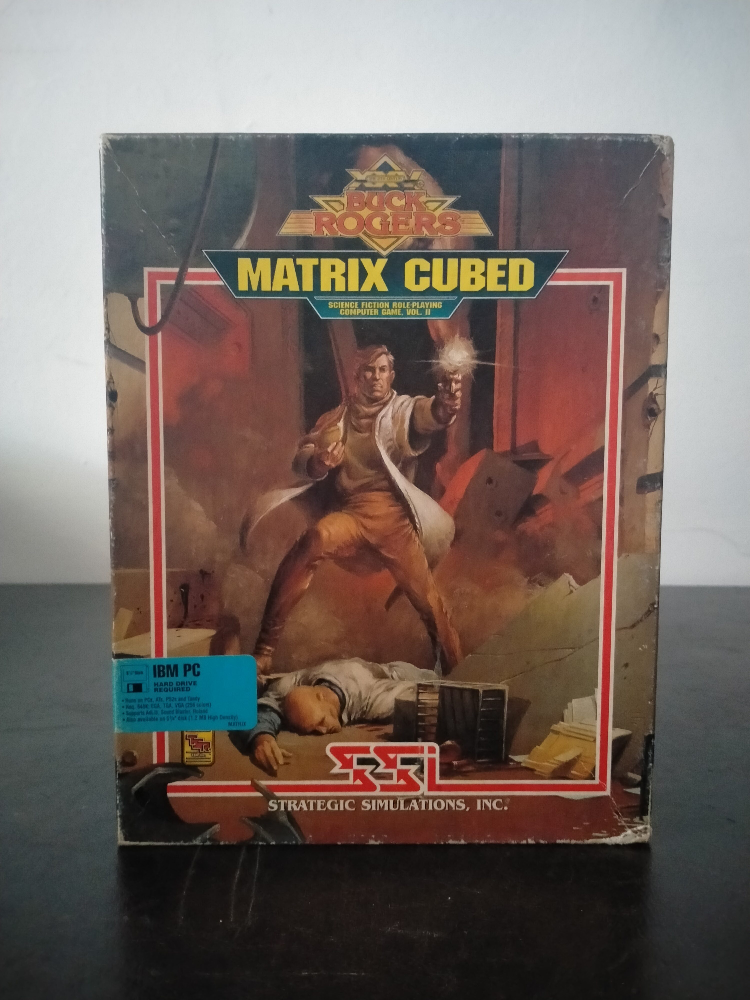

Ficha #000129
Buck Rogers: Matrix Cubed
Buck Rogers: Matrix Cubed es un videojuego de rol de ciencia ficción publicado en 1992 por Strategic Simulations, Inc. y segunda entrega de la serie iniciada con Countdown to Doomsday. Ambientado en el universo Buck Rogers XXVC de TSR, continúa directamente la campaña anterior y permite importar personajes o crear un grupo de hasta seis aventureros. Su argumento gira alrededor del Matrix Device, una tecnología capaz de transformar cualquier sustancia en energía pura y potencialmente decisiva para la recuperación de una Tierra devastada. El juego utiliza una variante del motor Gold Box de SSI, combinando exploración en primera persona, desplazamiento espacial, desarrollo de personajes y combates tácticos por turnos representados desde una perspectiva cenital. Esta edición norteamericana para IBM PC y compatibles se distribuyó en disquetes y requiere instalación en disco duro. Constituye una pieza singular dentro del catálogo Gold Box por sustituir la fantasía de Advanced Dungeons & Dragons por ciencia ficción espacial, ingeniería genética, corporaciones interplanetarias y el sistema de clases y habilidades propio de Buck Rogers XXVC.
- Formato
- Big Box
- Plataforma
- MsDos
- Género
- Rol CRPG Ciencia ficción Combate táctico por turnos Exploración en primera persona
- Serie
- Todos Big Box
- Desarrollador
- SSI Special Projects Team
- Distribuidor
- Strategic Simulations, Inc.
- EAN
- —
Contenido de la edición
- Caja de cartón Big Box
- Rule Book
- Log Book
- 2 disquetes de 5,25 pulgadas
- Catálogo How to Play SSI
- Tarjeta de registro y servicio técnico
- Formulario de pedido SSI
- Formulario promocional del Clue Book
Preservación
- Protección
- Manual lookup
- Formato recomendado
- Otro
- Jugable en virtualización
- Sí
Los disquetes no incorporan protección física contra copia, pero el inicio del juego solicita una palabra localizada en el Rule Book o el Log Book. Para una preservación completa deben realizarse imágenes sectoriales individuales de los disquetes y digitalizarse ambos libros, conservando la correspondencia entre el software y la documentación utilizada para la verificación.